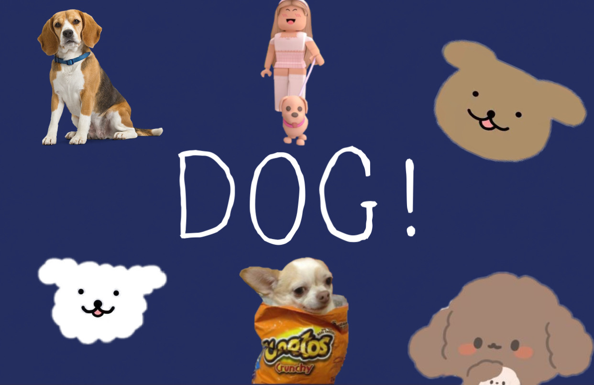

The origin of species
Canis lupus familiaris is a member of the phylum Chorchordata, subphylum Vertebrata, class Mammalia, subclass Eutheriae, order Carnivora, order Splitopoda, and family Canidae.dogs are distributed all over the world. The dog, along with the horse, the ox, the sheep, the pig and the chicken are called "six animals". Some scientists believe that dogs were domesticated from gray wolves by early humans between 40,000 and 15,000 years ago. Known as "the most faithful friend of man", they are the pets with the highest breeding rate, and their life span is about 12~18 years [1]. In Chinese culture, the dog belongs to one of the 12 Chinese zodiac animals, the 11th among them.
 Look at next page
Look at next page